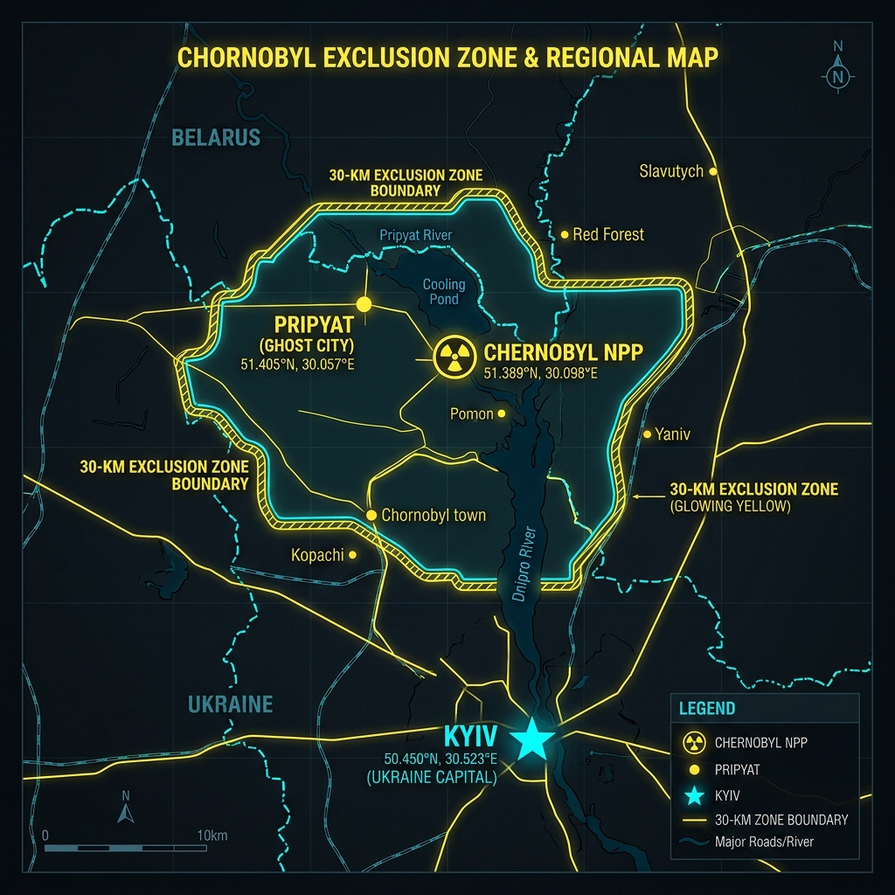
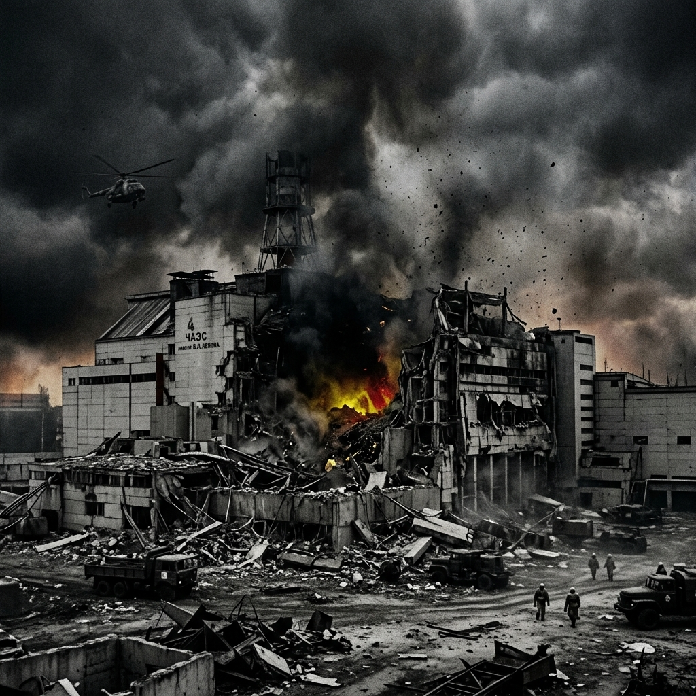
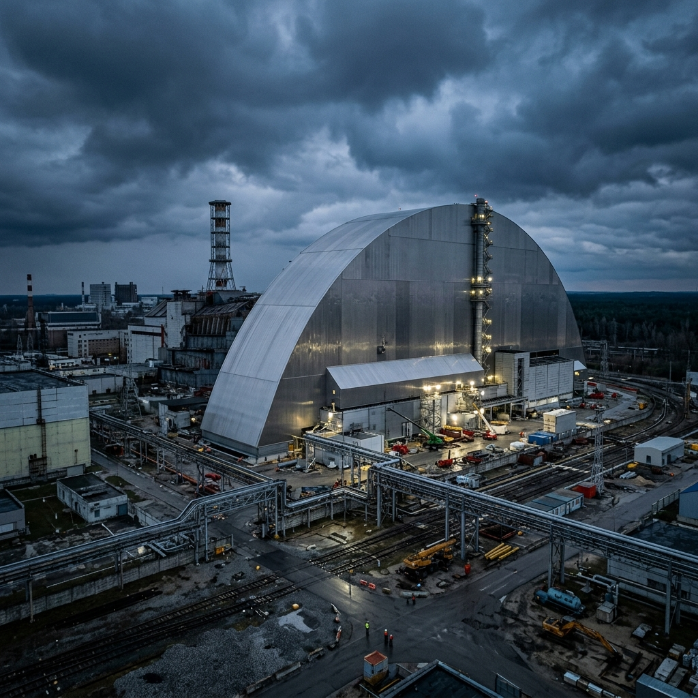

CHERNOBYL DISASTER (1986)
The World's Worst Nuclear Power Plant Accident
OUR TEAM
02 What is a Nuclear Power Plant?
- Nuclear Energy: Thermal energy released by breaking atomic bonds in heavy uranium isotopes.
- Nuclear Fission: Neutrons split Uranium-235 atoms, initiating a self-sustaining chain reaction.
- Steam Production: Superheated coolant water vaporizes under high pressure inside the loop.
- Turbine Rotation: High-velocity steam expands against and rotates steam turbine blades.
- Power Generation: Spinning generator magnets convert mechanical rotation to electricity.
Electricity Generation Process
03 About the Chernobyl Plant
- Location: Near Pripyat, Ukrainian SSR, Soviet Union (110 km north of Kyiv).
- Reactor Type: RBMK-1000 graphite-moderated, boiling water pressure-tube design.
- Plant Capacity: Housed 4 operational reactors, each producing 1,000 MW of electricity.
- Reactor 4 Significance: Completed in December 1983, it was a highly modern unit.
- Primary Purpose: Combined power generation for the grid and plutonium synthesis.

04 Why the Disaster Happened
- Safety Test: Designed to verify if spinning turbines could power cooling pumps during an outage.
- Operator Errors: Bypassing automatic shut-down systems to maintain emergency test status.
- Reactor Instability: Core poisoned by Xenon-135 due to prolonged low-power operations.
- Design Flaws: Volatile RBMK layout featuring a positive void coefficient safety risk.
- Control Rod Flaw: Graphite tips caused a localized power spike during initial insertion.
Operators drop power too low; Xenon gas poisons the core.
Safety interlocks disabled to bypass test conditions.
Steam bubbles (voids) trigger an exponential runaway reaction.
05 The Explosion
- AZ-5 Scram Command: Pressed at 1:23:40 AM, but control rods jammed in the warped channels.
- Steam Explosion: Uncontrolled power spike vaporized cooling water, blowing off the biological shield.
- Hydrogen Explosion: Zirconium-steam reaction released hydrogen gas, triggering a secondary blast.
- Graphite Ignition: Exposed moderator blocks ignited, feeding a 10-day high-altitude thermal fire.
- Energy Release: Dispersed radioactive materials via thermal draft, rather than weaponized fission.
Chernobyl Reactor Explosion: Steam & hydrogen pressure blew open the core. Radioactive particles were carried up by thermal currents from the burning graphite.
Nuclear Weapon Detonation: Uncontrolled supercritical nuclear fission/fusion generating a massive shockwave and thermal fireball.
06 Immediate Emergency Response
- First Responders: Firefighters arrived within minutes with zero radiological protection gear.
- Fire Mitigation: Focused on extinguishing roof fires on Reactor 3 to stop plant-wide spread.
- Lethal Environment: Exposed to extreme fields up to 20,000 Roentgens per hour.
- System Ignorance: Control room management initially refused to believe the core had exploded.
- Heroic Sacrifices: Firemen took lethal radiation doses within minutes to contain the disaster.
Extreme Dose Exposure
First responders absorbed radiation levels up to 400 times lethal doses within 30 minutes of arrival.
07 Evacuation & Disaster Management
- 36-Hour Delay: Soviet leaders initially concealed the disaster, delaying public warnings.
- Pripyat Evacuation: 49,000 residents evacuated in under 3 hours using 1,200 buses.
- Relocation Message: Told to pack for a temporary 3-day absence; they never returned.
- Exclusion Zone: Establishment of the 30-km perimeter to block civilian exposure.
- Total Displacement: Over 335,000 people were permanently relocated from radioactive areas.
08 Containment Measures
- Helicopter Missions: Dropped 5,000 tons of sand, clay, lead, and boron to seal the core.
- The Sarcophagus: Concrete dome built in extreme radiation to temporarily encase Reactor 4.
- Liquidator Forces: Over 600,000 emergency personnel cleaned up highly contaminated areas.
- New Safe Confinement: Steel arch positioned in 2016 to secure the core for 100 years.
- Primary Objective: Contain radioactive dust and prevent water runoff from entering soil.
Visual History of Reactor Containment


09 Health Effects of the Disaster
- Acute Radiation Syndrome: Diagnosed in 134 responders; 28 died within three months.
- Thyroid Cancer: High pediatric rates from drinking milk contaminated with Iodine-131.
- Potassium Iodide (KI): Blocks thyroid absorption of radioactive iodine isotopes.
- Mental Health Impact: Widespread psychological stress and anxiety from relocation trauma.
- Chronic Monitoring: Ongoing surveillance for cataracts and cardiovascular risk.
High dose radiation damaging bone marrow, gastrointestinal tract, and central nervous system.
Iodine-131 concentrates in the thyroid. Highly treatable if caught early, but caused thousands of pediatric cases.
A key preventive measure. Blocks radioactive isotope absorption. Crucial for nuclear incident planning.
10 Environmental Impact
- The Red Forest: 10 sq km of pine trees absorbed lethal radiation, died, and turned red.
- Atmospheric Fallout: Wind currents carried radioactive isotopes across Europe.
- Soil Contamination: Cesium-137 and Strontium-90 isotopes persist with 30-year half-lives.
- Water Management: Dykes built along the Pripyat River to shield Kyiv's water reservoirs.
- Bioaccumulation: High radiation levels found in forest berries, mushrooms, and local wildlife.
11 Wildlife After the Disaster
- Acute Mortality: High radiation caused immediate deaths and reproductive failures.
- Unexpected Rebound: Animal populations grew significantly inside the Exclusion Zone.
- Key Species: Wolves, wild boars, roe deer, and endangered Przewalski's horses flourished.
- The Human Factor: Absence of humans (hunting, farming, cars) outweighed radioactive risks.
- Genetic Studies: Chronic low-dose exposure causes mutations, but populations remain stable.
Short-term (1986): Severe cellular damage and high mortality rates in local animal and plant populations.
Long-term (Present): The Exclusion Zone has become one of Europe's largest wildlife sanctuaries. Human absence has proven more beneficial to wildlife than radiation is harmful.
12 Deaths and Long-Term Impact
- Direct Fatalities: 2 workers killed in the blast; 1 died of coronary thrombosis.
- Emergency Crew Deaths: 28 firefighters and operators died of acute radiation exposure.
- WHO Cancer Estimate: Projects up to 4,000 excess cancer deaths among liquidators and residents.
- UNSCEAR Calculation: Confirms ~60 direct deaths and thyroid cancer cases to date.
- Long-term Variance: Discrepancies exist due to differing low-dose statistical models.
Comparison of Long-Term Cancer Death Estimates
13 Lessons Learned for Disaster Management
- Reactor Modification: RBMK units updated to prevent void surges and increase scram speeds.
- Safety Culture: Standardized emergency drills and prioritize safety over test quotas.
- International Oversight: Expanded the IAEA and created the Association of Nuclear Operators.
- Emergency Protocols: Built regional potassium iodide stockpiles and rapid warnings.
- Global Notification: Signed treaties to quickly alert neighboring nations of transboundary leaks.
Engineering Safety
Eliminate positive feedback loops in reactor designs.
Global Notification
Mandatory alerts for cross-border radiation threats.
Crisis Planning
Pre-stocked iodine and clear evacuation routes.
Safety Culture
Allow operators to abort tests without fear of reprisal.
Disaster Management Synthesis
The Event
An avoidable industrial accident caused by design flaws and human error, releasing massive radiation.
The Response
Marked by heroic individual sacrifice, but severely hindered by state secrecy and delayed evacuation.
The Legacy
Transformed global nuclear regulations and set new standards for emergency response plans.
"The true cost of Chernobyl was not just the physical damage, but the price of compromised safety culture and delayed transparency."
THANK YOU
Questions and Discussion
KEY ACADEMIC REFERENCES
- International Atomic Energy Agency (IAEA) - Safety Series No. 75-INSAG-7 (The Chernobyl Accident: Updating INSAG-1)
- World Health Organization (WHO) - Health Effects of the Chernobyl Accident and Special Health Care Programmes (2006 Report)
- United Nations Scientific Committee on the Effects of Atomic Radiation (UNSCEAR) - Sources and Effects of Ionizing Radiation (Chernobyl Annex)